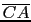
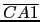

suivant: La projection orthogonale :
monter: Les transformations
précédent: La similitude : similarity
Table des matières
Index
L'inversion : inversion
Voir aussi : 9.17.7 pour la géométrie plane.
inversion, en géométrie 3D, a deux ou trois arguments :
un point (le centre de l'inversion), un réel (la valeur du rapport de
l'inversion) et éventuellement l'objet géométrique à transformer.
Lorsque inversion a deux arguments, c'est une fonction qui agit sur un
objet géométrique.
Si inver:=inversion(C,k) et A1:=inver(A),
on a
* = k.
On tape :
inver:=inversion(point(0,0,0),2)
Puis :
On tape :
inver(point(1,2,-2))
On obtient :
Le point (2/9,4/9,-4/9)
On a en effet :
[2/9,4/9,-4/9]*[1,2,-2]=2 et les points (1,2,-2) et
(2/9,4/9,-4/9) sont alignés avec le point (0,0,0) centre de l'nversion.
On tape
inver(sqhere(point(1,0,0),1))
On obtient :
Le plan d'équation x=1
On tape :
inver(sqhere(point(1,0,0),1/2))
On obtient :
La sphère de centre (8/3,0,0) et de rayon 4/3 (elle passe par les points (4/3,0,0) et (4,0,0))
Lorsque inversion a trois arguments, inversion dessine et renvoie
le transformé du troisième argument dans l'inversion de centre le premier
argument et de rapport le deuxième argument.
Si A1:=inversion(C,k,A) on a
* = k.
On tape :
inversion(point(0,0,0),2,sphere(point(1,0,0),1))
On obtient :
Le plan d'équation x=1
On tape :
inversion(point(0,0,0),2,sphere(point(1,0,0),1/2))
On obtient :
La sphère de centre (8/3,0,0) et de rayon 4/3
suivant: La projection orthogonale :
monter: Les transformations
précédent: La similitude : similarity
Table des matières
Index
Documentation de giac écrite par Renée De Graeve